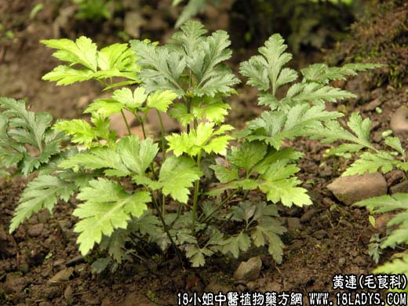

【中药概述】
黄连为毛茛科草本植物黄连、三角黄连的根。苦、寒。归心、肝、胆、胃、大肠经。
1．清热燥湿：用于多种湿热证，尤以治胃肠湿热的泻痢，呕吐为最常用。如（<和剂局方>香连丸）、（葛根黄芩黄连汤）、（<丹溪心法>左金丸）、（<伤寒论>黄连汤）。
2．泻火解毒：用于热病，高热烦躁等心火亢盛之证，若胃火牙痛，或牙龈红肿、口臭牙宣者可与升麻 石膏 生地等同用。
3．用于热毒痈肿、湿热疮疡等。可与连翘 金银花 野菊花 蒲公英等同用。如（<外台秘要>黄连解毒汤）。
【药效鉴别】
黄连大苦大寒，清热燥湿作用胜于黄芩长于清心胃肠湿热。
【药理作用】
1.对革蓝氏阳性、革蓝氏阴性多种细水长流有不同的抑菌作用，小檗碱及水煎剂有广谱抗菌作用；
2.有明显的利胆、保肝、降谷丙转氨酸作用；
3.有某些肾上腺样作用；
4.有抗癌、抗炎作用。
【化学成分】
含小檗碱、黄连碱、甲基黄连碱、棕榈碱及药根碱。
【用量用法】
3——10g，水煎服或入剂。外用适量。
【使用注意】
胃寒呕吐、脾虚泄泻不宜。
酒黄连：苦寒。归心、肝、胃、大肠经。引药上行，善清上焦头目之火。肝火偏旺，目赤肿痛，常配龙胆草 黄芩等。